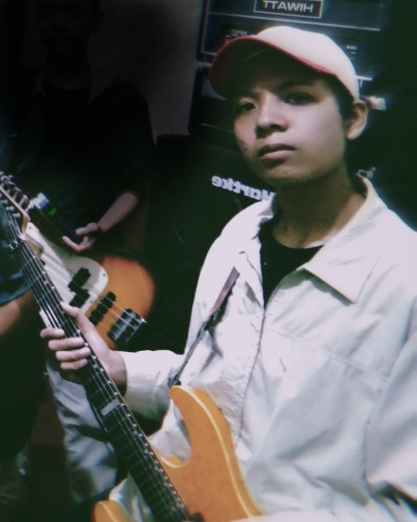

Alvin Putra Pratama
A.K.A Soonic13 Projects
Saya adalah seorang Sosial Media Marketing di salah satu perusahaan startup DOT INDONESIA
Memiliki nama moniker Soonic13, AlvinSarkasz karena saat mengerjakan project saya selalu mendengarkan playlist dari salah satu band alternative rock yaitu SonicYouth.
Kemudian teman-teman memberikan saya nama moniker Soonic13
Untuk mengenal saya lebih dalam, Anda bisa menekan tombol dibawah ini
Lebih lengkap